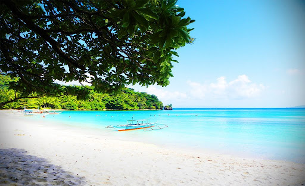

ABOUT THE DESTINATION
Bacacay Beach is a relaxing coastal area with beautiful scenery. It is ideal for swimming and enjoying the sea. Visitors love its peaceful and natural environment, making it a favorite for local weekend getaways.

HISTORY & COMMUNITY
Bacacay has long been a thriving fishing community in Albay. Over time, its unique black sand beaches became recognized for their beauty and tourism potential, transforming the area into a growing destination.
FACTS
Key details about this coastal gem.
- Location: Bacacay, Albay
- Sand Type: Volcanic Black Sand
- Activity: Swimming & Sunset Viewing
- Vibe: Relaxing & Natural
TRAVEL TIPS
Essentials for your beach day.
- 🩱 Essentials: Bring swimwear and a dry bag.
- 🌤️ Timing: Visit early morning for the calmest water.
- 🍎 Food: Pack light snacks and plenty of water.
- ♻️ Environment: Respect nature; take your trash with you.
THINGS TO DO
Explore and enjoy the shoreline.
Swimming
Sunset Photography
Beach Strolling
Cove Exploration
Relaxing
Wait for the Golden Hour to get the best photos of the black sand sparkling!